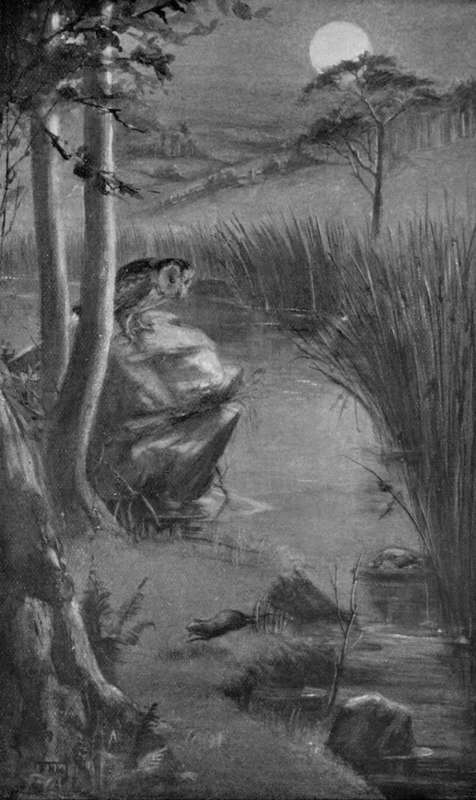

III. Wild Hunting
Description
This section is from the book "Creatures Of The Night: A Book Of Wild Life In Western Britain", by Alfred W. Rees. Also available from Amazon: Creatures Of The Night: A Book Of Wild Life In Western Britain.
III. Wild Hunting
Once, during the first summer of the water-vole's life, I saw as pretty a bit of wild hunting as I have ever witnessed, and my pleasure was enhanced by the fact that the quarry escaped unharmed. Early in the afternoon, instead of during twilight, I, in company with the members of the village Hunt and their mongrel pack, had searched the stream and its banks for rats, and had enjoyed good sport. Suddenly, however, our ragamuffin hounds struck the line of nobler game: Lutra, the otter, was astir in the pool.
I was not surprised, for on the previous night, long after the moon had risen and sleep had descended on the village, I, with Ianto the fisherman, had passed the spot on returning from an angling expedition eight or ten miles up-stream, and had stayed awhile to watch the most expert of all river-fishers, as she dived and swam from bank to bank, and sometimes, turning swiftly into the backwater, landed on the shingle close by Brighteye's reed-bed, to devour at leisure a captured trout.
Lutra soon baffled our inexpert hounds, and gained refuge in a "strong place" well behind a fringe of alder-roots, whence Bob, notwithstanding his most strenuous efforts, failed to "bolt" her. I then drew off the hounds, led them towards the throat of the pool, and for a half hour assisted them to work the "stale drag," till I reached a bend of the river where Lutra's footprints were still visible on the fine, wet sand at the brink of a rapid.
Later, when the dogs were quietly resting at their homes, I returned, alone, to my hiding place not far from Lutra's "holt." As long as daylight lasted I saw nothing of vole or otter, though several brown rats, undeterred by the disturbance of the early afternoon, came from their burrows and ran boldly hither and thither through the arched pathways of the rank grass by the edge of the bank. The afterglow faded in the western sky around the old church beyond the village gardens; and the night, though one by one the stars were lighted overhead, became so dark that I could see nothing plainly except the white froth, in large round masses, floating idly down the pool. I waited impatiently for the moon to rise, for I feared lest the faint, occasional plashes in the pool indicated that the otter had left her "holt," and would probably be fishing in a distant pool when an opportunity for observation arrived.
The night was strangely impressive, as it always is to me while I roam through the woodlands or lie in hiding to watch the creatures that haunt the gloom-wrapt clearings among the oaks and the beeches. In the darkness, long intervals, during which nothing will be seen or heard, must of necessity be spent by the naturalist; and in such intervals the mind is often filled with what may, perhaps, be best described as the spiritual influence of night, when the eyes turn upward to the stars or to the lights of a lone farmstead twinkling through the trees, and imagination, wondering greatly at its own daring, links time with eternity, and the destinies of this little world with the affairs of a limitless universe.
At length the rim of the full moon appeared above the crest of the hill behind the village, and gradually, as the orb ascended, the night became brighter, till the whole surface of the pool, except for a fleeting shadow, was clear and white, and a broad silver bar lay across the ripples between me and the reed-bed on the further side. For a time no sign of a living creature was visible; then a brown rat crept along the bank beneath my hiding place; a dim form, which from its size I concluded was that of Lutra, the otter, crossed a spit of sand about a dozen yards above the reed-bed, where a moonbeam glanced through the alders; and a big brown owl, silhouetted against the sky, flew silently up-stream, and perched on a low, bare branch of a Scotch fir beside the grass-grown path.
After another uneventful interval a slight movement was observable in the reeds directly opposite. Straight in the line of the silver bar a water - vole came towards me, only the head of the little swimmer being visible at the apex of a V-shaped wake lengthening rapidly behind him. More than half-way across the pool a large boulder stood out of the water, but the vole was heading towards the bank above. Then, apparently without cause, he turned quickly and made straight for the stone. He had barely landed and run round to hide in a shallow depression of the stone when the water seemed to swell and heave immediately beside the boulder, and Lutra's head, with wide-open jaws, shot above the current. Disappointed, the otter vanished under the shining surface of the stream, came to sight once more in an eddy between the boulder and the bank, and once more disappeared. I was keenly interested, for every movement of the vole and the otter had been plainly discernible, so bright was the night, and so close were the creatures to my hiding place; and, raising myself slightly, I crawled a few inches nearer the edge of the overhanging bank.
For a long time the vole, not daring to move, remained in the shadow. I had almost concluded that he had dived through some crevice into the dark water on the other side of the boulder, when he cautiously lifted his head to the light, and crept into a grass - clump on the top of the stone. Thence, after a little hesitation, he moved to the edge, as if contemplating a second swim. Fastidious as to his toilet, even in the presence of danger, he rose on his haunches and washed his round, furry face. The action was almost fatal. The brown owl, that had doubtless seen him by the grass - clump and had therefore left her perch in the fir-tree, dropped like a bolt and hovered, with wings nearly touching the silver stream, above the spot where she had marked her prey. But she was too late — the vole had dived. Yet, even while, having alighted on the boulder, the owl stood baffled by the disappearance of the vole, an opportunity came, which, had she been poised in the air, could scarcely have been missed. Close to the near bank a wave rose above the surface of the eddy as Lutra, having seen the vole dive from the stone, again hurried in pursuit. So fast was the otter that the momentum carried her well into the shallows. But for the third time the vole escaped. I indistinctly saw him scramble out, and run, with a shrill squeak, across a ridge of sand, offering a second chance to the listening owl; and, from his flight in the direction of the well known burrow, I concluded that the hunted creature was russet-coated little Brighteye. But the bird knew that she could not rise and swoop in time; so, probably disturbed by the presence of the otter, she flew away down-stream just as Lutra, since the vole was out of reach, glided from the sand and philosophically turned her attention to less evasive trout and eels.
"An opportunity came, which, had she been poised in the air, could scarcely have been missed".
[To face p. 88].
Then all was motionless and silent, but for an occasional faint whistle as Lutra fished in the backwater at the throat of the pool, the wailing cry of the owl from the garden on the crest of the slope behind me, and the ceaseless, gentle ripple of the river. At last, when the voices of the otter and the owl were still, and when the shadows were foreshortened as the moon gazed coldly down between the branches of the fir, Bright-eye, having recovered from his recent fright, left his sanctuary by the roots of the willow, and wandered, singing, singing, down the white, winding run-way and out into the main road of the riverside people, till he came to a jutting branch above the river's brim, whence he dived into the placid pool, and swam away towards the reed-bed. Then the crossed shadows of the flags and hemlocks screened him from my sight.
Continue to: